Python 데이터분석 라이브러리(12) - seaborn
Data-Science 강의는 여러 절로 구성되어 있습니다.
- Relational Database MySQL(1) - Introduction
- Relational Database MySQL(2) - Install 및 환경설정
- Relational Database MySQL(3) - MySQL 전체 운영 실습
- Relational Database MySQL(4) - Data Modeling
- Relational Database MySQL(5) - MySQL Utility
- Relational Database MySQL(6) - SQL 기본
- Relational Database MySQL(7) - SQL 고급(1)
- Relational Database MySQL(8) - SQL 고급(2)
- Relational Database MySQL(9) - Table & View
- Relational Database MySQL(10) - Index
- Relational Database MySQL(11) - Index 성능비교
- NoSQL Database MongoDB(1) - Introduction
- NoSQL Database MongoDB(2) - NoSQL Data Modeling
- NoSQL Database MongoDB(3) - MongoDB Basic Concept
- Python 데이터분석 라이브러리(0) - Introduction
- Python 데이터분석 라이브러리(1) - NumPy
- Python 데이터분석 라이브러리(2) - NumPy(Exercise)
- Python 데이터분석 라이브러리(3) - Pandas(Series)
- Python 데이터분석 라이브러리(4) - Pandas(DataFrame 생성)
- Python 데이터분석 라이브러리(5) - Pandas(DataFrame indexing)
- Python 데이터분석 라이브러리(6) - Pandas(DataFrame functions)
- Python 데이터분석 라이브러리(7) - Pandas(DataFrame merge)
- Python 데이터분석 라이브러리(8) - Pandas(DataFrame 제어)
- Python 데이터분석 라이브러리(9) - Pandas(DataFrame Grouping)
- Python 데이터분석 라이브러리(10) - Pandas(Exercise)
- Python 데이터분석 라이브러리(11) - matplotlib
- Python 데이터분석을 위한 통계
- Python 데이터분석 라이브러리(12) - seaborn
- Python 데이터분석 라이브러리(13) - folium
데이터 시각화 - seaborn
Seaborn은 Matplotlib의 기능과 스타일을 확장한 파이썬 시각화 library입니다.
비교적 단순하며 기능도 훨씬 다양하기 때문에 많이 사용되고 있습니다. Seaborn을 사용하기 위해서는 먼저 library를 설치해야 합니다.
conda install seaborn
seaborn - scatter
먼저 살펴볼 기능은 회귀선을 포함하는 산점도 입니다.
import pandas as pd
import matplotlib.pyplot as plt
from matplotlib import font_manager, rc
import seaborn as sns
plt.rcParams['axes.unicode_minus'] = False
font_path = './font/malgun.ttf'
font_name = font_manager.FontProperties(fname=font_path).get_name()
rc('font', family=font_name)
# Data Loading
# 추후에 살펴볼 titanic data set을 seaborn의 기능을 이용해 load합니다.
titanic = sns.load_dataset('titanic')
# display(titanic)
# print(titanic.info())
# 회귀선을 포함하고 있는 산점도
# sns.set_style('darkgrid') # style을 적용하면 한글이 깨진다
plt.figure(figsize=(15,5))
sns.regplot(x='age',
y='fare',
data=titanic)
plt.title('회귀선이 있는 산점도 : age vs. fare')
plt.show()
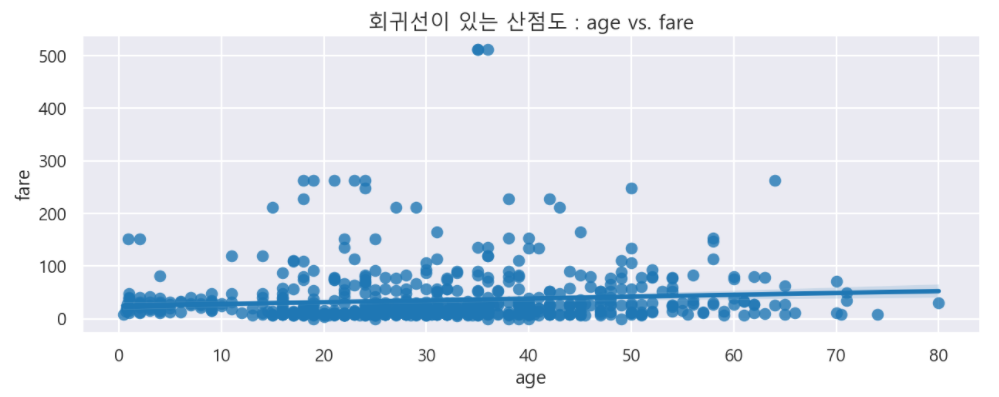
seaborn은 범주형 데이터에 들어 있는 각 범주별 데이터의 분포를 확인할 수 도 있습니다. stripplot()이나 swarmplot()을 이용하면 되는데 swarmplot()은 데이터의 분산까지 고려해서 데이터 포인트가 서로 중복되지 않도록 그래프를 그려줍니다.
아래의 코드로 확인해보죠.
import pandas as pd
import matplotlib.pyplot as plt
from matplotlib import font_manager, rc
import seaborn as sns
plt.rcParams['axes.unicode_minus'] = False
font_path = './font/malgun.ttf'
font_name = font_manager.FontProperties(fname=font_path).get_name()
rc('font', family=font_name)
# Data Loading
# 추후에 살펴볼 titanic data set을 seaborn의 기능을 이용해 load합니다.
titanic = sns.load_dataset('titanic')
# display(titanic)
fig = plt.figure(figsize=(15,5))
ax1 = fig.add_subplot(1,2,1)
ax2 = fig.add_subplot(1,2,2)
# 이산형 변수의 분포 - 데이터 분산 미고려(중복표시)
sns.stripplot(x='class',
y='age',
data=titanic,
ax=ax1)
# 이산형 변수의 분포 - 데이터 분산 고려(중복표시 없음)
sns.swarmplot(x='class',
y='age',
data=titanic,
ax=ax2)
ax1.set_title('Strip plot')
ax2.set_title('Swarm plot')
plt.tight_layout()
plt.show()
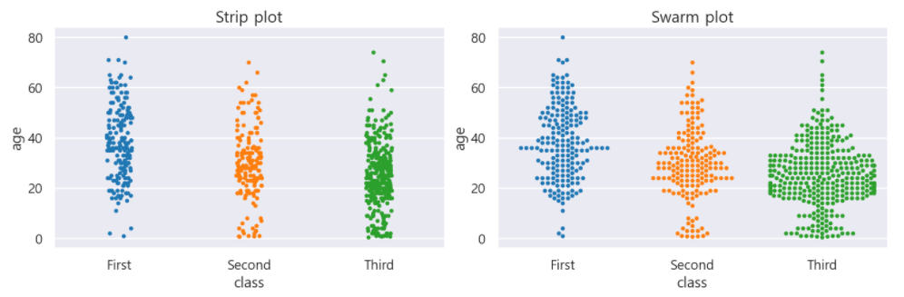
seaborn - histogram / kde
이번에는 Histogram과 Kernel Density Function(커널 밀도 함수)를 그래프로
출력할 수 있는 기능을 살펴보도록 하겠습니다.
먼저 구현된 코드와 결과를 보고 부연설명을 하기로 하죠.
import pandas as pd
import matplotlib.pyplot as plt
from matplotlib import font_manager, rc
import seaborn as sns
plt.rcParams['axes.unicode_minus'] = False
font_path = './font/malgun.ttf'
font_name = font_manager.FontProperties(fname=font_path).get_name()
rc('font', family=font_name)
# Data Loading
# 추후에 살펴볼 titanic data set을 seaborn의 기능을 이용해 load합니다.
titanic = sns.load_dataset('titanic')
fig = plt.figure(figsize=(15,5))
ax1 = fig.add_subplot(1,3,1)
ax2 = fig.add_subplot(1,3,2)
ax3 = fig.add_subplot(1,3,3)
# distplot은 deprecated
sns.distplot(titanic['fare'],
ax=ax1)
# KDE
sns.kdeplot(titanic['fare'],
ax=ax2)
# histogram
sns.histplot(titanic['fare'],
ax=ax3)
ax1.set_title('titanic fare - hist/kde')
ax2.set_title('titanic fare - kde')
ax3.set_title('titanic fare - hist')
plt.tight_layout()
plt.show()
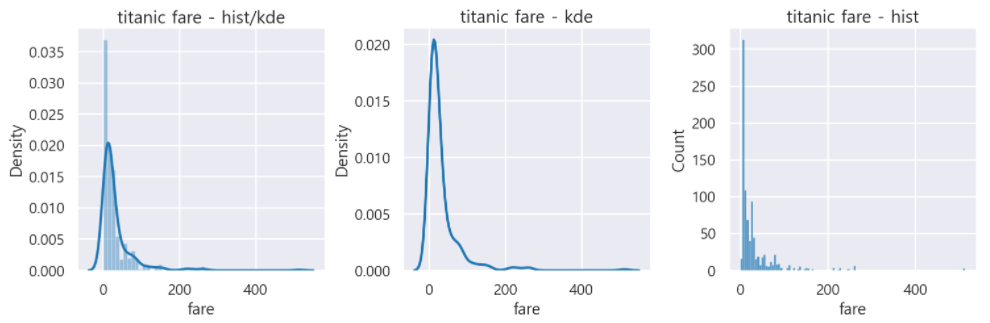
Histogram의 내용은 대충 이해하고 있지만 커널 밀도 함수는 도대체 무엇일까요?
여기서부터 조금 수학적인 내용이 나오게 되는데 참고삼아 알아두시면 될 듯 합니다.
커널 밀도 함수는 KDE(Kernel Density Estimation) - 커널 밀도 추정을 위한 함수입니다.
KDE(Kernel Density Estimation)은 커널 함수(Kernel Function)을 이용한 밀도추정방법 중
하나 입니다. 따라서 KDE를 알기 위해서는 먼저 밀도추정(Density Estimation)부터
알아야 합니다.
우리는 밀도(Density, 단위 : kg/3제곱미터)라는 말을 알고 있습니다.
수학/과학적으로 밀도는 질량(mass, 단위 : kg)을 부피(volume, 단위 : 3제곱미터)로 나눈값을 의미합니다.
예를 들어, 같은 부피의 철과 솜이 있을 때 당연히 철과 같이 더 조밀한 물체가 질량이 높기 때문에 밀도가 높다고 말할 수 있습니다.
여기서 주의해야 할 점은 우리가 알아보고자하는 Density Estimation의 Density가 우리가 알고
있는 밀도(Density)의 의미가 아니라는 겁니다. 일반적으로 Machine Learning,
Data Engineering에서 사용하는 Density는 Probability Density(확률밀도)를 의미합니다.
따라서 우리가 알아보려는 Density Estimation(밀도추정) 역시 Probability Density Estimation이라고
해야 합니다. 하지만 너무 길기 때문에 Probability를 빼고 단순히 Density Estimation이라고
부르는 것 뿐입니다.
아무튼, (Probability) Density Estimation 이란 무엇일까요? 단순한 예를 들어보죠.
Data란 어떤 변수가 가질 수 있는 다양한 가능성 중 하나가 현실 세계에서 구체화 된 값입니다. 만약 모든것을 알고 있는 초월자가 존재한다면 이 변수(random variable)가 가질 수 있는 본질적인 특성을 당연히 알고 있을 것입니다. 하지만 우리는 유한한 인간이기 때문에 관측된 데이터를 통해 그 변수(random variable)이 가지는 본질적인 특성을 파악하고자 노력합니다.
하나의 데이터는 변수의 일면에 불과하기 때문에 변수의 본질적인 특성을 파악할 수 없습니다.
당연히 변수의 본질적인 특성을 파악하기 위해서 우리는 많은 데이터가 필요하며 이렇게 관측된
데이터의 분포로 부터 원래 변수의 분포 특성을 확률적으로 추정하고자 하는 것이
바로 (Probability) Density Estimation 입니다.
예를 들어 잠실 대교를 통과하는 차량의 일일 교통량을 파악하는게 목적이라고 가정하면, 이 때의 변수(random variable)은 일일 교통량이 됩니다. 그리고 매일매일 실제로 관측한 값이 데이터가 되겠죠. 당연히 날마다 교통량은 다르게 관측될 겁니다. 하루, 이틀의 데이터만을 가지고 잠실 대교의 일일 교통량을 결론내리기에는 많이 부족할 겁니다. 하지만 이런 데이터가 6개월, 1년, 3년이상 쌓이게 되면 우리는 이 일일 교통량이라는 변수가 어떤 값의 분포특성을 가지는지 좀 더 정확하게 표현할 수 있게될 겁니다.
이 때 일일 교통량이라는 변수가 가질 수 있는 값과 그 값을 가질 가능성의 정도를 추정하는
작업이 바로 (Probability) Density Estimation입니다.
자 그러면 변수(random variable)의 밀도(density)를 추정하려면 어떻게 해야 할까요? 변수의 값들만 와다다다 있는 상태에서 특정 값을 가질 가능성의 정도를 어떻게 알 수 있을까요?
이때 우리에게 그 값을 알려주는 함수가 필요한데 이 함수가 바로
확률밀도함수(Probability Density Function - pdf)입니다.
즉, 어떤 변수 x의 밀도를 추정한다는 말은 x의 확률밀도함수를 (이용해) 추정한다는 말과 같은 의미를 가지게 됩니다.
어떤 변수 x의 확률밀도함수 f(x)가 아래의 그림과 같다고 가정하면,
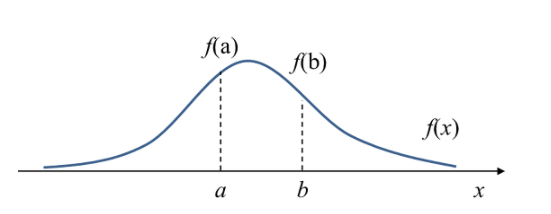
f(a)는 x = a에서의 확률밀도(probability density) 즉, 변수 x가 a라는 값을 가질 상대적인 가능성(relative likelihood)를 나타내게 됩니다.
위 확률밀도함수에서 밀도는 함수값입니다. 우리는 이렇게 특정 값에서 확률밀도의 값을 구할 수 있지만 x가 a와 b사이처럼 특정 구간의 값을 가질 확률도 구할 수 있습니다.
이러한 확률은 어떻게 구하면 될까요? a와 b 구간에서의 확률밀도함수의 면적으로 구하면 됩니다. 이 면적을 구하기 위해서 우리가 수학적으로 적분을 수행하는 것이구요.
결론적으로 density(밀도)는 확률밀도함수(pdf)의 함수값이며 이 함수를 일정구간에 대해
적분하면 확률이 나오게 됩니다.
따라서 이 확률밀도함수(pdf)를 구할 수 있으면 그 변수가 가질 수 있는 값의 범위, 확률분포등을
알 수 있게되고 이 pdf가 Density Estimation의 중추적인 역할을 하게 됩니다.
조금만 더 이야기를 확장해보죠.
위에서 설명한 밀도추정(Density Estimation)은 크게 parametric 방식과
non-parametric 방식으로 구분됩니다.
Parametric 밀도추정 방식은 미리 pdf에 대한 모델을 정해놓고 데이터들로부터 모델의
파라미터만 추정하는 방식입니다. 위에서 잠깐 언급한 일일 교통량에 대한 pdf를
정규분포를 따른다고 가정해 버리는 거죠. 그러면 관측된 데이터로부터 평균과 분산만 구하면
되기 때문에 밀도추정문제 자체가 상당히 간단해집니다.
하지만 현실적으로 이렇게 pdf를 우리가 가정하거나 미리 알 수 있을까요? 전혀 그렇지 않습니다. 이런 경우 어떠한 사전정보나 지식없이 순수하게 관측된 데이터만을 이용해서 확률밀도함수를 추정해야 하는데 이를 non-parametric density estimation 이라고 합니다.
non-parametric density estimation의 가장 간단한 형태가 바로 histogram입니다.
즉, 관측된 데이터로부터 histogram을 구한 후 구한 histogram을 정규화하여 확률밀도함수로
사용하는 것이죠.
이런방법을 histogram density estimation 이라고 합니다.
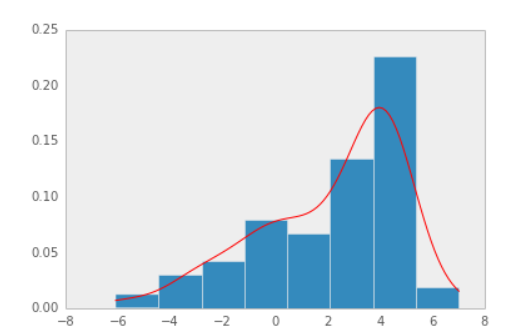
그러면 histogram density estimation 방법은 문제가 없는가? 라는게 궁금해 지는데
사실 histogram은 bin의 경계에서 불연속성이 나타난다는 점, bin의 크기 및 위치에 따라서
histogram자체가 달라진다는점등의 문제를 가지고 있습니다.
Kernel Density Estimation은 non-parametric density estimation 방법 중 하나로서
커널 함수(Kernel Function)을 이용하여 histogram방법의 문제점을 개선한 방법입니다.
커널 함수(Kernel Function)은 원점을 중심으로 대칭이면서 적분값이 1인 non-negative 함수를 의미합니다. Uniform, Gaussian, Cosine 함수가 대표적인 커널 함수입니다.
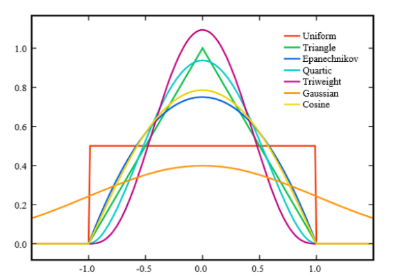
그러면 우리의 데이터에 대한 커널 함수를 어떻게 만들 수 있는가? 라는게 궁금해지는데 커널 함수 만드는 과정을 수식을 배제하고 조금 쉽게 이해하자면 다음과 같이 하면 됩니다.
- 관측된 데이터 각각마다 해당 데이터 값을 중심으로 하는 커널 함수를 생성합니다.
- 이렇게 만들어진 커널 함수를 모두 더한 후 전체 데이터의 개수로 나눕니다.
아래의 그림은 histogram을 이용한 밀도 추정 방법과 KDE 방법을 비교한 것인데, KDE방법은 histogram에 비해 이산적이지 않고 상당히 smooth한 확률밀도함수(pdf)를 얻을 수 있습니다.
KDE(Kernel Density Estimation)를 통해 얻은 확률밀도함수는 히스토그램 확률밀도함수를 스무딩(smoothing)한 것으로도 볼 수 있다는 의미입니다.
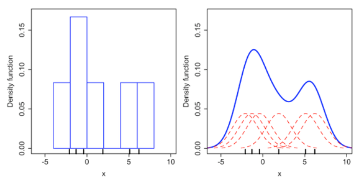
seaborn - heatmap
Seaborn library는 히트맵을 제공합니다. 2개의 범주형 데이터 변수를 각각 x축, y축에 놓고 데이터를 matrix형태로 분류합니다.
pandas의 피벗테이블을 이용해 sex 컬럼을 행 인덱스로, class 컬럼을
열 이름으로 설정한 후 그 내용을 확인해 보죠.
import pandas as pd
import matplotlib.pyplot as plt
from matplotlib import font_manager, rc
import seaborn as sns
plt.rcParams['axes.unicode_minus'] = False
font_path = './font/malgun.ttf'
font_name = font_manager.FontProperties(fname=font_path).get_name()
rc('font', family=font_name)
# Data Loading
# 추후에 살펴볼 titanic data set을 seaborn의 기능을 이용해 load합니다.
titanic = sns.load_dataset('titanic')
# display(titanic)
plt.figure(figsize=(15,5))
table = titanic.pivot_table(index=['sex'],
columns=['class'],
aggfunc='size') # 데이터 값의 크기를 기준으로 집계
sns.heatmap(table,
annot=True, fmt='d', # 데이터 값 표시여부, 정수형 포맷
cmap='YlGnBu', # 컬러 맵
linewidth=.5, # 구분 선
cbar=False) # 컬러 바 표시 여부
plt.show()
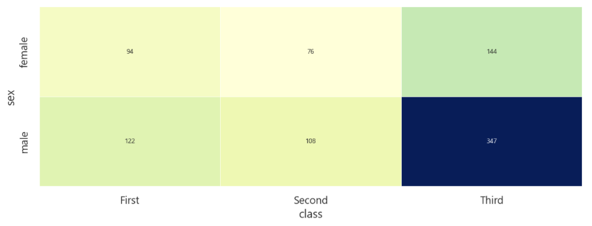
seaborn - barplot
seaborn에도 막대그래프를 그려주는 barplot이 존재합니다. 옵션을 살짝 바꿔가면서
그래프를 그려보죠. x축에는 sex, y축에는 survived 컬럼을 할당해서 그래프를
그려보겠습니다.
import pandas as pd
import matplotlib.pyplot as plt
from matplotlib import font_manager, rc
import seaborn as sns
plt.rcParams['axes.unicode_minus'] = False
font_path = './font/malgun.ttf'
font_name = font_manager.FontProperties(fname=font_path).get_name()
rc('font', family=font_name)
# Data Loading
# 추후에 살펴볼 titanic data set을 seaborn의 기능을 이용해 load합니다.
titanic = sns.load_dataset('titanic')
# display(titanic)
fig = plt.figure(figsize=(15,5))
ax1 = fig.add_subplot(1,3,1)
ax2 = fig.add_subplot(1,3,2)
ax3 = fig.add_subplot(1,3,3)
sns.barplot(x='sex',
y='survived',
data=titanic,
ax=ax1)
sns.barplot(x='sex',
y='survived',
data=titanic,
hue='class',
ax=ax2)
sns.barplot(x='sex',
y='survived',
data=titanic,
hue='class',
dodge='False',
ax=ax3)
ax1.set_title('titanic - sex / survived')
ax2.set_title('titanic - sex / class')
ax3.set_title('titanic - sex / class(stacked)')
plt.tight_layout()
plt.show()
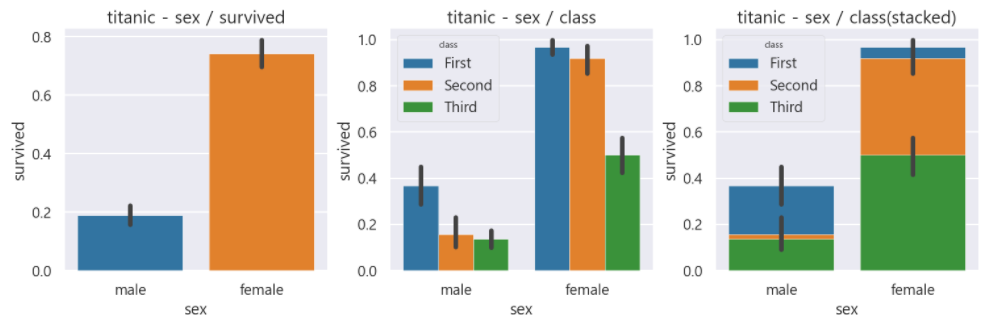
막대그래프가 정상적으로 그려지는걸 확인할 수 있습니다. 그런데 가만히 보니 막대그래프의 위쪽으로 선들이 하나씩 보이는데 이 선들은 무엇일까요?
이 선들은 오차막대(error bars)라고 불리는 것으로 신뢰구간(Confidence Interval-CI)을
나타냅니다.
seaborn - countplot
각 범주에 속하는 데이터의 개수를 막대 그래프로 나타냅니다.
그리 어렵지 않은 내용이니 예제를 통해서 알아보죠.
import pandas as pd
import matplotlib.pyplot as plt
from matplotlib import font_manager, rc
import seaborn as sns
plt.rcParams['axes.unicode_minus'] = False
font_path = './font/malgun.ttf'
font_name = font_manager.FontProperties(fname=font_path).get_name()
rc('font', family=font_name)
# Data Loading
# 추후에 살펴볼 titanic data set을 seaborn의 기능을 이용해 load합니다.
titanic = sns.load_dataset('titanic')
# display(titanic)
fig = plt.figure(figsize=(15,5))
ax1 = fig.add_subplot(1,3,1)
ax2 = fig.add_subplot(1,3,2)
ax3 = fig.add_subplot(1,3,3)
sns.countplot(x='class',
data=titanic,
ax=ax1)
sns.countplot(x='class',
hue='who',
data=titanic,
ax=ax2)
sns.countplot(x='class',
hue='who',
data=titanic,
dodge=False,
ax=ax3)
ax1.set_title('titanic class')
ax2.set_title('titanic class - who')
ax3.set_title('titanic class - who(stacked)')
plt.tight_layout()
plt.show()
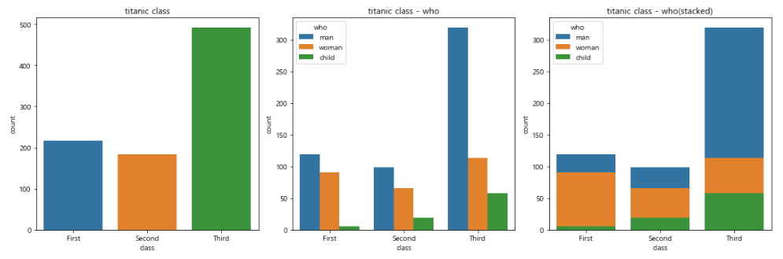
seaborn - boxplot
boxplot은 범주형 데이터 분포와 주요 통계 지표를 함께 제공합니다. 기본적인 boxplot은 matplotlib에서 살펴봤으니 seaborn에서 사용하는 방법을 코드로 알아보죠.
import pandas as pd
import matplotlib.pyplot as plt
from matplotlib import font_manager, rc
import seaborn as sns
plt.rcParams['axes.unicode_minus'] = False
font_path = './font/malgun.ttf'
font_name = font_manager.FontProperties(fname=font_path).get_name()
rc('font', family=font_name)
# Data Loading
# 추후에 살펴볼 titanic data set을 seaborn의 기능을 이용해 load합니다.
titanic = sns.load_dataset('titanic')
# display(titanic)
fig = plt.figure(figsize=(15,5))
ax1 = fig.add_subplot(1,2,1)
ax2 = fig.add_subplot(1,2,2)
sns.boxplot(x='alive',
y='age',
data=titanic,
ax=ax1)
sns.boxplot(x='alive',
y='age',
hue='sex',
data=titanic,
ax=ax2)
plt.tight_layout()
plt.show()
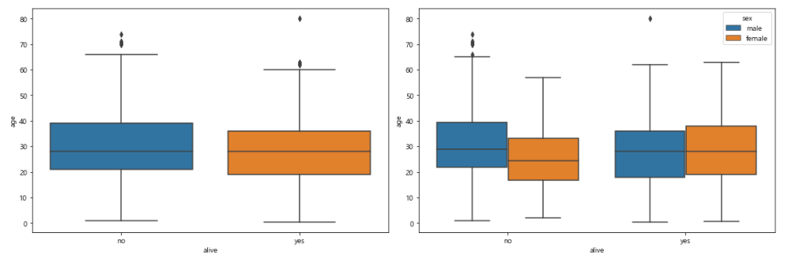
End.
Data-Science 강좌는 아래의 책과 사이트를 참조했습니다. 조금 더 자세한 사항을 알고 싶으시면 해당 사이트를 방문하세요!!